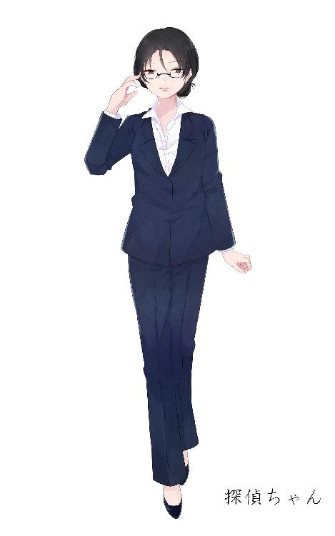

| ドクターアルファのティータイム EP2～キリマンジャロと極道と～ | |
| 白色黒蛇 | |
| (2018) | |
白色黒蛇
［削除済み］の手記――１
９月３日
研究費は大学がある程度は出してくれる。そこはあまり困っていない。
しかし自分の生活費ばかりは自分で稼ぐしかない。ここが結構困りものだ。
日ごろ研究室に籠っている以上、週３以上勤務を求められるスーパーやコンビニ、飲食店でバイトは出来ない。派遣バイトで力仕事をやろうにもそれが出来るような強い身体でもない。週１回か２回と不定期で、かつ短い時間で稼ぐとなると、もう夜の仕事しかないだろう。
なので、アタシはこの小さなキャバクラで研究の合間を縫いながら働いている。
それなりに評判はいい方た。
今日、ある指名客に入る前に店長にこんなことを言われた。
「次の指名のお客さん、この店の"上"の方だから、失礼無いようにね」
このキャバクラ、そういえばわずかばかり「毛利組」って暴力団の息がかかっているって話を聞いたことがあったな。それが事実なら、そういうこともあるのだろう。
「おうおう、随分綺麗な嬢ちゃんじゃねぇか。」
アタシを指名してくれたのは小太りな男性。イケメンではなかったけど、悪い人ではなかったな。ヤクザというのも一様に悪人ってわけではないみたいだ。
キリマンジャロと極道と
どれだけ地域に貢献しようが関係ない。
どれだけ出世しようが関係ない。
俺はしょせんヤクザ者。そりゃあ死ぬさ、あっさり死ぬさ。
俺がヤクザで居続ける限り、内にも外にも俺を「殺したい」って思う奴はいるだろう。外を出歩けば狙撃手が狙ってる。人混みに紛れりゃナイフで刺そうと誰かが息を潜めてる。路地裏に回れば間違いなく襲われる。
俺がただの「みかじめ」の取り立てをやる末端だろうが、組の若衆だろうが、若頭だろうが、組長だろうが関係ない。
けれど、正直もう血を見るのはうんざりだ。
戦争なんかせずとも、この地に根を下ろして長いことやってけるような、こう言ったら身の程知らずかもしれねぇが「その土地の守り神」みてぇな存在として長いこと続く。そんな組にしたかったんだ。
それは組のためだが、何よりこの国のためでもあった。
この国を"奴ら"から守る最善策になるはずだった。そのはずだった。
畜生、なんでこんな惜しいとこで殺されちまったかなぁ？
仕方ねぇとは言え、タイミングが最悪だったぜ。
物静かな料亭。
ししおどしがカコンと鳴るのとほぼ同時に、俺の右胸を鉛の塊がスッと通り抜けた。
「......あ？」
気付いたら俺は見知らぬ場所にいた。
真っ白な天井、真っ白な床、真っ白なベッド真っ白な寝具......
ここはどこだ？
病院か？ 医療器具が見当たらないから違うだろう。
じゃあ留置所か？ こんな綺麗すぎる留置場は見たことが無い。それにサツが１人もいねぇなんてことはないだろう......というか、そもそもこの世な訳がない。
俺は五分の杯を交わそうと西城連合会の長曾我部会長と会談していた途中、どこの馬の骨か知らないが殺し屋に右胸、心臓を撃たれ長曾我部会長と一緒に殺されたはずだ。
だからここが病院な訳はないし、警察の留置場な訳もない。
じゃあ、だとすれば、いったいここはどこなんだ？
もしやあの世か？ あの世ってのはこんな真っ白なとこなのか？
俺は少し太った身体をよいしょと起こす。なんだか少し関節とか腰とかが固い気がする......仕方ないな。日ごろから食うだけ食って運動しなかったからな。いつもいつもダイエットしなきゃいけないかなぁと思っていたんだがな。
起き上がってみて分かったが、俺の身体はどうやら生前の俺の身体と調子は変わりないようだ。天使の羽も生えてない。悪魔の角もない。
どうやらあの世というのはそこまでファンタジーなものではないらしいな......
「おはようございます、くっみちょうさんっ」
とても軽く良く響く声が聞こえた。若い女の声。ソプラノより少し低い、飄々としていながらも落ち着きを感じるような声だ。
なんだか若頭だった頃よく指名していたキャバ嬢みたいな声だ。あの嬢は何て名前だったか......
それはともかく、この嬢ちゃんはなんだ？ あの世の関係者か？
「あぁ？」
「おぉっと、そんな怖い声ださなくても良いじゃないか。何も喧嘩しようってんじゃないんだからさ」
初対面のはずなのになんだか随分と馴れ馴れしい......というか喧嘩？ いやいやあり得ない。女相手に手ぇ出すかよ。抱くと言うなら話は別だがな。
俺は声のした方向を見る。当然だがそこには女がいた。
「ところで気分はどうだい？ 施術自体は上手くいったはずなんだが......どこか痛むところとかないかい？」
施術......施術？
俺、なんかの手術を受けたってのか？ 死んだ後に？
死んだ後に手術とは珍妙だ。司法解剖なら分かるが、あれを施術とは言わないだろう。
「嬢ちゃん何言ってやがんだい？」
だから当然俺はこう聞いた。
赤い髪のツインテール、裸眼、色白、細身で高身長。年齢は見たところだいたい２０代後半から３０代くらい。少し派手に見える顔。パッと見かなり目立つ赤いハイヒール。そしてそれらに似合わない、医者のような白衣を着ている。
着ているのが白衣ではなくドレスだったら少なくともうちの組でやっていたキャバクラじゃアタマを取り合っていただろうなぁ、と思うくらい良い顔をしていやがる。
「おいおいそんなじろじろ見ないでくれたまえ、アタシも女だよ？ ちょっと照れるだろう」
......ちょっと言葉遣いだけが残念だ。もう少し可憐な物言いだったなら言うことなしだったのだが。
さて、それより本題に入ろう。
「さっき施術つったな？ なんの施術だ？」
「組長さんの復元手術さ、死んだ組長さんをこの世にカムバックさせたんだ」
ほうほうなるほど、死んだ俺をこの世に戻すたぁ現代医療ってやつも随分と進化したもんだな。本当に大したもんだ......ってなるか⁉
「なんだと⁉」
驚きのあまりつい柄にもなく大声を出してしまった。
死んだ俺を生き返らせた？ そんなバカなことがあるか。
死んだ人間の蘇生。理を外れた所業、どう考えてもあり得ないだろう。それを「この世にカムバック」などとあっさりと、軽々しく口にしながらやってのけるこの嬢ちゃん。一体全体何なんだ？
「ほうほう、ヤクザの組長ってのはそんな風に驚くのか。これは面白いものが見れたよ」
仰天する俺と相反して、この嬢ちゃんはまるでカブトムシかなんかを見る小学生みたいな顔でニコニコと笑いながら俺を見ていた。
なんて嬢ちゃんだ。俺が「ヤクザの組長」と分かったうえでこんな顔するとは。ますます恐ろしく思える。
「アタシは研究者でね、「生体復元」の研究をしているんだ。組長さんが生き返ったのもそれによるものさ。まぁ、今回は依頼されてやったんだけどね」
生体復元、学の無い俺からすれば何が何だかさっぱり分からない。それでも、この嬢ちゃんが「人を生き返らせる研究をしていること」は何となくだが分かった。その結果俺が生き返ったことも、納得は出来ずともなんとなくだが認識は出来た。そしてなるほど、どうやら誰かが俺を蘇らせるようにとこの嬢ちゃんに頼んだらしい。
「誰がそんなことを頼んだんだ？」
悪趣味な、そんなことをさせるような奴はいったいどこの誰なんだ？
「おや、生き返ったことはもう納得したのかい？ 流石は海千山千の極道のトップを張るだけはある。呑み込みが早い」
「いいから教えてくれよ。誰が？ 俺を生き返らせるように依頼した？」
少しだけ圧を加えて嬢ちゃんに聞いた。
女を相手にこういう態度でモノを訪ねるのは趣味じゃないが、如何せんこの嬢ちゃんは只者じゃない。俺のような人間に嬉々とした態度で接するだけの度量を持った上に、その奥に更にどす黒い何かを隠し持っているように見える。こんな奴は俺の組にもいなかった。男勝りなんてもんじゃない。俺が見た限りこの嬢ちゃんが世界で一番恐ろしい存在だと感じる。
そんな化け物みたいな嬢ちゃんが相手だ。こっちが弱腰になったら、その瞬間に飲み込まれてしまうだろう。だから俺は柄にもなく、少し脅すような声を出した。
それでもやっぱりこの嬢ちゃんは動じない。
そりゃ動じないよな、この嬢ちゃんは。
何も言わずにずっとニコニコ、ニコニコと笑みを浮かべて俺を見ている。
楽しむような、面白がるような、明るく、狡猾な笑みだ。
そのまま黙って俺を見ていた、見ていた、見ていた......
１秒が１時間にも思えるような沈黙のあと、しばらくして、やっと嬢ちゃんがその口を開いた。
「それはコーヒーでも飲みながらゆっくり話そうじゃないか。聞いたよ。組長さんコーヒーが好きなんだろう？ 良い豆を仕入れておいたからさ」
キリマンジャロ
タンザニアのキリマンジャロ山の麓、アルーシャ、モシ近くの標高１５００ｍから２０００ｍ付近のプランテーションで栽培されているコーヒー豆。
強い酸味と甘い香りを持つことが特徴だ。
「......って最低限のことは知っているけれども、アタシは基本紅茶派だから、そこまで詳しくはないんだよね」
嬢ちゃんはドリッパーにセットしたペーパーフィルターの中へ既に挽いてあるキリマンジャロの粉をザラザラと入れ、銅製のやかんでお湯を注いだ。
お湯を注ぐとキリマンジャロのほんのりとした甘い香りがほわほわと漂ってくる。あぁ、悪くない香りだ。だが......
「なっちゃねぇな」
「へ？」
素っ頓狂な声を上げる嬢ちゃん。
なるほど『紅茶派だからそこまで詳しくはない』というのは本当らしい。
「コーヒーを淹れる手順としてまず「蒸らし」を忘れるな。コーヒーの味を左右する重要な工程だから――」
そこまで口にして思った。説明するのも面倒だ、と。
仕方ない。手本を見せてやろう。
俺は少し服の袖をまくり、やれやれとばかりに立ち上がった。
「貸せ、やってやる」
「じゃあ、お手並み拝見しようか」
嬢ちゃんは逆らうことなく素直に俺にやかんを渡した。
ペーパーフィルターのコーヒー豆に少量のお湯をそっと乗せるように注ぐ。粉全体に均一にお湯を含ませ、２０秒ほどそのままにして蒸らす。
紅茶を淹れたらしばらく蒸らさなければならないのは常識だが、コーヒーにも「蒸らす」作業が必要だ。
最初嬢ちゃんが適当にお湯を入れたからちょっと雑になっちまっているかもしれないが、今からでもやらないよりはマシだろう。
注ぐお湯の量は２０ｃｃ程度、下のコーヒーサーバーにポタポタとお湯が数滴落ちてきた。
その後、開いたペーパーフィルターの中心からひらがなの「の」を描くように湯を注ぐ。するとペーパーフィルターの中の粉がお湯を含み、膨れるようにペーパーフィルターを満たしていく。そしてすぐ潮が引くようにしぼんでいき、ぽたぽたとコーヒーサーバーに黒い液体を溜めていく。
うんうん、やはりさっきと比べて圧倒的に香りが違う。ホワッと、顔に優しく触れてくるのが分かる。
水面が上から１／３くらい減ったら次のお湯を注ぐ。するとまた再び香りが広がっていく。
その香りは近くで見ていた嬢ちゃんのところまで届いているらしい。
「おぉ！ 流石組長さん、手慣れてるねぇ」
と嬢ちゃんは感嘆の声を上げた。
「そりゃ、何度もやったからな」
「へぇー......彼らの話通りだ」
彼らの話通り？ そういえばさっきも『組長さんコーヒーが好きなんだろう？』って言っていたな。俺を生き返らせるよう依頼したのは俺のコーヒー好きを知っている人間のようだ。となると十中八九絞られる。
俺のコーヒー好き、そのこだわりを知っているのは組事務所の執務室に入ったことがある人間だけだ。ウチの系列、傘下の組の者や直系団体の奴らじゃない。そういう奴らは基本応接室での対応だった。つまり俺の組、毛利組本家の誰かが依頼したんだろう。
「嬢ちゃん、あらかじめカップを温めておいてくれ。その方が旨い」
「分かった。従おう」
なんで毛利組本家が俺を生き返させたのか......もしかして、と思える心当たりはちょいちょいあるけれど、まぁその辺も含めて嬢ちゃんが何を吹き込まれたか聞き出すとしようか。
コーヒーでも飲みながら、な。
嬢ちゃんが温めたカップにコーヒーを注ぐ。
暖かい飲み物の温度が急激に下がると香りや風味が損なわれる。嬢ちゃんにカップを温めるように言ったのはそれを防ぐためだ。
紅茶でも共通だと思うから、多分これは嬢ちゃんも分かっているだろう。
「ほぉ......」
コーヒーが注がれたカップを両手で受け取った嬢ちゃんは目をキラキラさせながらカップの中を見つめていた。
「こんなに濃く、深い香りが......これは凄い！ 淹れ方を少し変えるだけでこんな風になるのか！？」
「あ、あぁ......」
こんな喜ぶとは。さっきのどす黒い笑みとは違い、嬢ちゃんは興味と歓喜に満ちた明るい顔をしていた。
嬢ちゃんは香りを楽しんだ後、コーヒーをコクリと口にする。
「ん～......」
全く、旨そうに飲みやがる。
俺も自分のカップにコーヒーを注ぎ、一口。
うん、旨い。
キリマンジャロの上品な香り、そして甘いコク。あぁ久しぶりだ。この嬢ちゃんの言うことが正しければ生き返って初めて飲むコーヒーだ。たまらない。
「で、結局誰が依頼したんだ？」
さて本題。俺はどうして生き返ったんだ？
そこをハッキリさせねばならない。
「組長さんがいた毛利組の若頭さん？ に頼まれたんだ。お小遣いを貰ってさ。あまり詳しいことは話してくれなかったけど「３代目が今どうしても必要なんだ」って言っていたね」
ほうほう、俺がどうしても必要......か。偉大な先代、先々代の組長ではなくよりにもよって「俺」が必要なのか。
「組長さんだいぶ信頼されているみたいじゃないか」
「それは......違うな」
「え？」
違う。多分そうじゃない。
「俺が必要、というより正確には「俺が秘匿したままの隠し口座の暗証番号」が必要なんだろうな」
「隠し口座？」
「あぁ、ウチの組に万が一のことがあったらっつって初代組長がこしらえた隠し口座だ。俺が組長に就任したタイミングで先代から受け継いだもんでな」
「しかし、組長さんがその暗証番号を誰にも教えないまま殺されちゃったから引き出すことが出来ずに困っている......って訳かい？」
「そういうこと、だろうな」
そして、それを引き出そうと考えて俺を生き返らせたってことはウチの組は今それなりにヤバい状況にあると思われる。
まぁそもそも、俺は西城連合会の長曾我部会長と一緒に殺されたわけだから西城連合会も、ウチの毛利組も黙っている訳がない。西城連合会との戦争になっているか、それとも第３勢力との武力衝突か......どちらにしても血生臭いことになっているだろう。
「そういえばアタシ、あまりテレビとか見ないんだけど、偶然この前ニュースサイトを開いてね。こんな記事を見たんだ」
嬢ちゃんは白衣の胸ポケットから携帯を取り出しニュースサイトを開く。そしてその画面を俺に見せた。
『西城連合会と毛利組の抗争続く』
『昨日も銃撃戦で５人が死亡、３人が現行犯逮捕』
なるほど、何となく話が見えてきた。
「馬鹿野郎どもが」
俺と長宗我部会長。組織の頭を失った２つの組が互いに首のない体、まるで首無し騎士デュラハンのような有様で殺し合いを続けているらしい。日付を見ると長宗我部会長との会談から約１年が経っている。となると１年近くも戦争を続けているのか。
「隠し口座の暗証番号が目当てだとすると、若頭さんたちはそれを軍資金にでも使うつもりなのかな？」
その嬢ちゃんの指摘は多分正しい。
「ヤクザ、極道っていうやつは「仕返し」を重視するからな。まして互いの「頭」を取られた仕返しだ。どちらかが滅ぶまでやるだろう。けれど毛利組も西城連合会もそんな短時間で滅ぶような小さな組織じゃない。大金をつぎ込んでの体力勝負になっているはずだ」
それでさらに面倒なのがお互いトップを殺されて組織が一枚岩じゃ無くなっているかもしれないということ。
俺はともかく、長宗我部会長は「十年に一度の逸材」と評価されていた大人物。他所の組の連中が口を揃えて
「長宗我部会長が生きている限り西城連合会に手を出してはならない」
なんて言っていたくらいだ。そんな人が死んだとなれば西城連合会が少しずつバラバラになるのは必然と言える。
組織をロクにまとめる奴は誰もいない。しかしその癖「組長を殺された恨み」だけが組織中にまるでウイルスのように蔓延している。
戦争が泥沼化しても仕方ないだろう。
「そもそも、なんで組長さんは西城連合会の会長さんと話をしようとしたんだい？ 言っちゃあなんだが、敵同士だろうに」
「敵ってわけじゃなかったさ。同盟を結ぼうとしていたんだ。もっと強大な敵からこの国を守るためにな」
裏組織を生きているとこんな言葉をよく聞いたもんだ。
「日本のヤクザは生ぬるい」
嘘をつけ。普通の人、ヤクザ以外の人間はきっとそう言うかもしれないだろうが、この言葉は概ね事実だ。
多分、もう少し言葉を付け足すべきなのだろう。
「『海外と比べると』日本のヤクザは生ぬるい」
こう言えばきっと何となく言いたいことが理解できると思う。
中国マフィア、タイマフィア、ロシアやアメリカで暗躍するギャング共。
ユーロ圏内で活動する闇組織。そいつらのやり口を考えれば日本のヤクザのなんと優しく甘いことか。
もちろん、日本の警察が優秀だから過激なことが出来ないというのもその要因の１つではある。しかし、根本的に海外のマフィアどもと違う点として日本のヤクザは昔からその土地やそこに住む住人たちを守りたいと思う１つの郷土愛を持っているのだ。自分たちが根城とする街が賑わって欲しい、豊かになって欲しいと願う心を持つ。（もちろん利益を得られるからでもあるが）それ故滅多なことでは一般人を傷付けたりはしない。だからこそ、日本のヤクザは生ぬるいと言われるのだろう。（警察からすれば俺たちは違法組織に見えるのは変わらないが）
海外のマフィアはそんなことはない。自らの利権のためなら一切合切手段を問わない。容赦も躊躇もない。依存度、毒性の強い麻薬を市場にばら撒き、どう考えても支払えないような法外な地上げを行い、反発する人は当たり前のように殺す。
道徳心なんか欠片もない己の欲のままに暴れまわる海外マフィア。そんな連中が日本に、そしてこの街に来たらどうなるだろうかと考えるだけでゾッとする。
拠点とする街、土地、そこに住む人々を海外マフィアから守ること。それも俺らの使命の１つ。言うなれば俺らはそのための「必要悪」なんだ。
同じ考えの極道と手を組み、海外マフィアが永遠に日本に入って来られないようにする。それが俺の夢だった。ヤクザ同士が手を取り合い、互いの地を守りあう。ヤクザにとってもその土地にとってもそれが利益になると信じた。
「その土地の守り神のような存在」
ヤクザがそうなることこそ、俺の理想だったんだ。
「長宗我部会長は俺に共鳴してくれた最初の１人だった。西城連合会も毛利組もそれなりの規模の組だ。手を組めば海外マフィアに対する最強の防波堤になったはずだが、しかし今はもう......」
この国の守り神どころか疫病神、俺の理想とするヤクザの形からは随分と遠のいてしまった。
「でももしかしたら組長さんにもう一度組をまとめてもらって抗争を収めて貰おうって思っている......なんて見方は出来ないかい？」
「だとしてもそれは愚策だ。俺が生き返ったとなりゃそれはむしろ逆効果。西城連合会からすれば「元々あの会談も会長を殺すためだったんだ」と向こうの憎悪の炎に油を注ぐ結果となるだろうよ」
そう、だから今さら生き返っても意味がねぇ、そうだろ？ 長宗我部会長。
だから俺は、嬢ちゃんにあるお願いをする。
「嬢ちゃん。俺をもう一度殺しちゃくれねぇか？」
『先生、俺をもう一度殺してくれませんか？』
「......んー？」
俺はまだ熱いコーヒーをまるで酒を飲むようにぐっと喉に流し込む。
「もう、戦争は止められねぇ。俺がもう一度組に戻っても無意味だろう。挙句隠し口座をあいつらに渡してそれがそのまま戦争の軍資金になったら、俺に組を任せてくれた先代たちに申し訳が立たねぇ......だから、その、俺は生きてちゃなんねぇんだ」
「......アタシは小遣い貰ってやったんだ。死なせちゃアタシが殺される」
そういえばそんなこと言っていたな。そこはなんとかしてやらんと筋が通らないか。
「そこは俺がどうにかする。一筆書くなり、ビデオレターで送るなりして嬢ちゃんの身の安全は確保してもらうように計らってやる。なんなら高跳びの手はずだって......」
「......はぁー」
嬢ちゃんはため息をついた。
まるであきれ果てた様に、悪さをした自分の子供の醜態を嘆く母親のようなため息をついた。
「な、なんだってお前......」
「そんなことを聞いてくれるような連中じゃないだろう？ 極道、ヤクザ、暴力団ってのはさ」
「そ、そんなことはねぇ！ 俺らは一般人に手を挙げるような、海外のマフィア共みたいな無法者じゃねぇ！ 俺がきちんと説明すれば分かってくれるはずだ‼」
「だったら組長さんがきちんと説明すれば、戦争だって止まるはず。だろ？」
......それは、それは......
嬢ちゃんのその言葉を聞くと、俺はなんだか少し妙な気分になった。
死ぬ直前まであいつらは「守り神みたいな存在」になれるはずだと信じていた。なのに生き返った俺はあいつらを一度暴れだしたら止まらない。止まってはくれない。止まる事こそが最善策だと信じてくれない。そんな厄介者だと認識していた。
なんでだ？ なんで俺は、いきなりあいつらを「信じなくなっていたんだ？」
「結局臆病に逃げてるだけじゃないか。「組の中に俺を殺した奴がいたらどうしよう」「隠し口座だけ奪われてまた殺されるんじゃないか」ってね」
......そういえば、結局誰が俺と長宗我部会長を殺したか分からずじまい。もちろん被害者である俺が分かる事ではないし、ロクに殺した奴の顔も見れていない。しかし――
怖い。怖い？ 俺は怖いのか？
何を言う、俺はヤクザだ。あんな風に殺されても文句言えないような男だ。
「俺は、死なんか怖くない」
外を出歩けば狙撃手が狙ってる。人混みに紛れりゃナイフで刺そうと誰かが息を潜めてる。路地裏に回れば間違いなく襲われる。
ずっとそんな有様だった。死はいつも隣にあった。だから死なんか怖くない。
「......死が怖くない狂人が、守り神とはね」
狂人、狂人か。確かにそうかもな。そうかもしれない。それが守り神、矛盾していると言われて否定は出来なかった。
けれど、せめてもと思い俺は言い返す。
「狂人はお互い様だろ」
「そりゃそうか！ ははははっ」
「笑いごとじゃねぇ」
「かもね。けど、だからこそ組長さんは「守り神みたいなヤクザ」を目指していたんじゃないのかい？ 組長さんはヤクザって狂人の集まりを守り神にしようとした狂人だろ？ 今さらビビることはないじゃないか。とことん狂って暴れて、狂った願いを成就させるべきだろ？ その狂気の中に１ミリでも良心があるならなおさらそうすべきだと思うけどね」
狂人、それゆえの願い、理想、野望。
正気で俯瞰すれば間違いなくおかしいと思えるくそったれな夢。
けれど、それが俺たち「ヤクザ」の根っこだ。
俺たちはまともじゃない。まともな頭で「ヤクザ」はできない。
だからこそそれが己を「ヤクザ」たらしめんとするものだったのだ。
そうか、さっきまでの俺はどうやら「まとも」だったらしい。
全ての迷い、霧が晴れたような気がする。
生き返ってやっと俺は、俺の理想が狂人のそれなのだとちゃんと認識できたらしい。
「なーんて、同じ狂人の戯言さ。聞き流しておくれ」
雄弁に俺に狂気を説いた嬢ちゃんは、まるで何事もなかったかのように再びニコニコと笑った。
俺の理想が狂人のそれなら、嬢ちゃんが抱え込むそれはいったい何なんだろうか？ それはもはや狂人のそれを通り越している気がする。嬢ちゃんが腹に抱えているであろうそれは嬢ちゃんが持つマグカップの中のキリマンジャロのようだ。全く底が見えやしない。
「嬢ちゃん......嬢ちゃんはいったい何者なんだ？」
「アタシはドクターアルファ、生体復元を研究している研究者だよ」
互いのカップが空になったところで、ドクターアルファがこんなことを聞いてきた。
「ところでさ。「隠し口座」っていったいいくらあるんだい？」
それはあまりおいそれと教えて良いことでは無いが、ドクターアルファになら教えてもいいかと思った。それは恩を感じているからとかではなく、未だにドクターアルファに脅迫めいたものを感じているからでもない。
ただただ素直に「ドクターアルファに隠す意味は無いだろう」と思ったからだ。
「日本円で１０億ってとこだ」
「おぉ、凄い！」
小学生のように驚くドクターアルファ。
確かに大金だが、組の隠し口座としては些か少ないと思える値段なんだがな。
「大した額じゃねぇ。俺が生きていた頃の組のメインバンクには、３００億円はあったんだ」
俺がそう言うとドクターアルファは違う違うと首を横に振った。
「そういう話じゃないんだ。何て言うか、面白くってさ」
「面白い？」
「アタシ、毛利組から１０億貰ってるんだから」
キリマンジャロと極道と：ＥＮＤ
［削除済み］の手記――２
『先生、俺をもう一度殺してくれませんか？』
今日、復元した被検体[修正済み]がそう口にした。
何を言っているのかさっぱりわからなかった。
せっかく生き返らせたのに、せっかく生き返れたのに。
[修正済み]のエラーも無く、ほとんど完璧に復元できた被検体にそう口にされ、アタシは少しだけ驚いた。
「何を言っているのか、分かっているのかい？」
「先生こそ、あなたが何をしているのか分からないんですか？」
あの問いかけの意味が全く分からない。
アタシがやっていることが、まるで悪いことだと言われているようだった。
アタシの研究が間違っているとでもいうのかい？
......駄目だ。分からない。全然分からない。
けれどアタシは、アタシだ。
この研究をやめるつもりはない。
ドクターアルファと探偵ちゃん

「そうですか......」
海外のカレッジの敷地は日本のそれと比べて随分と広い。
緑に囲まれた庭、レンガ仕立ての外見、カフェテラスのような食堂、国立公園のように綺麗な通り道。
仕事が無ければベンチにでもゆっくり座り、缶コーヒーでも飲みたいものだ。
......こんなことを言うとまるでアルファみたい。
私が何故、海外の大学まで足を運んでいるかというと、記憶喪失中のドクターアルファのことが分かる人を探すためだ。
本名：不明
出身：不明
実年齢：不明
性別：女
後は「生体復元」を研究している。ということしか分からない。
そんなほとんど何も分からないような女性を探さなければならないと思うと頭が痛くなる。
「この女性を知りませんか？」
と写真を見せても首を横に振られる。
「生体復元の研究をやっていた女性研究員を探しているのですが」
と職員、教授、准教授に聞いても知らないと一蹴される。
わざわざ海外まで来てこの始末、全く酷いものだ。
しかしそれも仕方がない。
実質、砂漠でコンタクトレンズを探しているようなものだから――
「すいません、この女性を知りませんか？」
大学の礼拝所で聞き込みを行う。ドクターアルファの顔写真を見せて学生、職員に聞きまわる。
「知らないです」
「可愛いね、君の友達？ 紹介してよ」
「レッドのツインテール？ 私的には好きなスタイルかな」
「見たことないですね」
「今忙しいので」
......ロクなコメントは貰えない。
『そっかー。大変だねぇ』
進捗報告、何も分かっていないことを報告してもドクターアルファは怒らない。依頼主だというのにまるで他人事のように私の話を聞いていた。
「まぁ他の大学も周るつもりだけど......聞いてるの？」
『うん、ひぃふぇひるふぉ？』
うん、聞いているよ。と言っているのか。明らかに何か口に物を含んでいる。ティータイムの真っ最中らしい。
「......で、あなたの方は何か分かった？ 生体復元の際のエラー改善」
『うん、研究は色々手詰まりでしばらく手付かずだ』
研究は手詰まり？ しばらく手付かず？
私はドクターアルファに復元され、その際の「エラー」で記憶が無い。
私の記憶を回復させることと引き換えにこの依頼を引き受けているのだ。
私は依頼のために海外まで足を延ばしたというのにアルファの方は手付かずだなんて契約不履行もいいとこだ。
「ふざけないで！」
『ふふぁふぇふぇふぁいっふぇ......アタシはアタシでいろいろ忙しかったんだ。運営のためのお金稼ぎをしていたんだ。君の渡航費も、偽造パスポートの発行費も全部そのお金あってこそなんだよ？』
......むぅ、あまり強く咎められない。どうしようもない私はため息をついた。
「とりあえず次の定時連絡までにあと６校は回る予定だから、期待値は微妙だけどやってみるわ」
通話を切る。
いろいろと複雑な心境ではあるが立ち止まっていても仕方ない。
次の大学はここから３時間程度で行ける。急げば明るいうちに辿り着けるだろう......
いきなり着信音。
電話を切ったばかりのアルファからだ。
「今度は何？」
『あたし自身の情報を探すより「生体復元」の論文を捜した方が手っ取り早いかもしんないよ？』
シナリオ
：白色黒蛇
twitter:@hakusyokuK
イラスト、キャラクターデザイン
：櫻木花
twitter:@littleone01229
電子書籍作成にあたって
電書ちゃんの「でんでんコンバータ―」を使用させて頂きました。
注意事項
◆作品データについて
落丁、乱丁などありましたら先述の問い合わせ先までご連絡ください。取り急ぎ修正させて頂きます。また修正を行った際、ご購入頂いた書籍データが予告なく最新の版に入れ替わる事が御座います。御了承下さい。
本作品のすべてまたは一部を無断で複製・転載・配信・送信を行う事、第三者への譲渡、内容の無断改変は著作権法上のて例外を除き禁じられています。